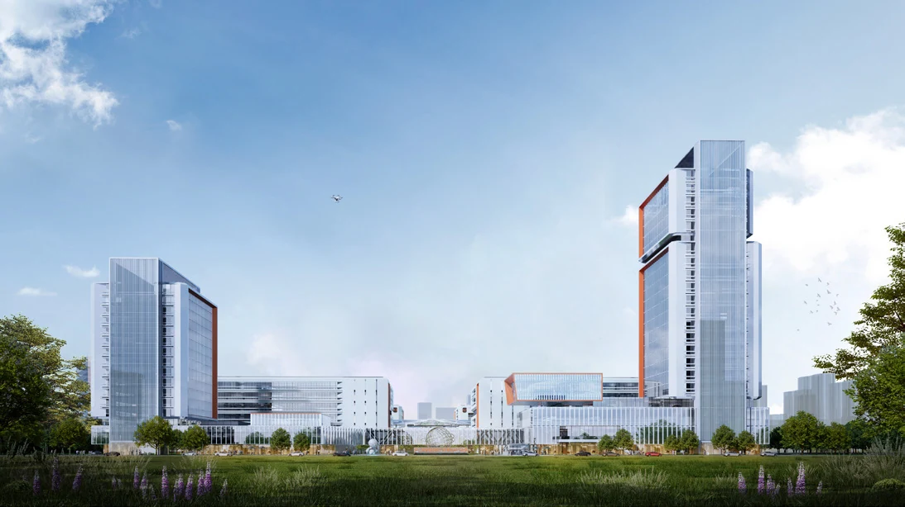

LUJIANG CONNECTED VEHICLE INDUSTRIAL PARK
庐江智能网联汽车零部件产业园
万物互联，超级智环
安徽 · 庐江
智能网联 · 工业上楼 / 2025.06

- 地点
- 安徽 · 庐江
- 年份
- 2025.06
- 类型
- 智能网联 · 工业上楼
- 阶段
- 投标方案
- 参与
- 项目设计参与 · 团队协作
- 设计团队
- 深圳市建筑设计研究总院有限公司合肥分院
PROJECT / 项目
项目位于庐江县高新区城西大道与文昌路交口东北侧。通过共享货运环路串联生产厂房与暂存仓库，以螺旋盘道和二层平台建立立体物流体系，配合园区门户与中央共享空间组织整体。
01 / DESIGN共享货运环路
用连续的货运体系联系各生产单元，将厂房、仓储与运输组织为相互协同的整体。
02 / DESIGN多首层与立体运输
通过螺旋盘道到达二层，将首层运输能力延伸到上部生产空间。
03 / DESIGN园区门户与公共界面
在城市道路交口组织形象节点，同时通过中心空间和步行联系回应员工日常活动。